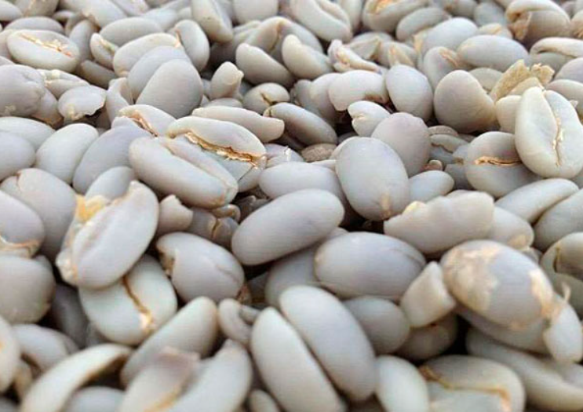

En un coup d'œil :
Process unique à l'Indonésie (Sumatra, Sulawesi). On dépulpe, on fermente légèrement, puis on décortique le parche à 30–35% d'humidité (vs 10–12% ailleurs). Le grain nu finit de sécher. Résultat : profil terreux/herbacé/épicé unique, corps très dense, acidité quasi nulle. C'est le café "polarisant" : on adore ou on déteste.
Comprendre : L'accident devenu tradition
Le principe du Giling Basah
Giling Basah = "mouture humide" en indonésien
Ce qui le rend unique :
Le décorticage (hulling) se fait alors que le grain contient encore 30–35% d'humidité, au lieu de 10–12% pour tous les autres process.
Pourquoi c'est révolutionnaire (et risqué) :
•Le parche humide est encore mou → facile à retirer mécaniquement
•Le grain nu (sans protection) finit de sécher directement
•Cette exposition crée des microfissures et permet des réactions enzymatiques impossibles ailleurs
Résultat : Profil sensoriel totalement unique, impossible à reproduire par d'autres méthodes.
Pourquoi ce process existe
Le contexte climatique indonésien :
À Sumatra et Sulawesi, les producteurs font face à :
•Humidité extrême (HR 80–95% toute l'année)
•Pluies fréquentes (pas de saison sèche marquée)
•Impossibilité de sécher jusqu'à 10–12% en temps raisonnable (risque moisissures)
L'invention pragmatique (années 1970s) :
Les producteurs ont découvert qu'en retirant le parche avant la fin du séchage, ils pouvaient :
•✅ Accélérer drastiquement le séchage final (grain nu sèche 2–3× plus vite)
•✅ Réduire les risques de moisissures
•✅ Vendre plus vite (cash-flow critique pour petits producteurs)
L'accident heureux : Ce qui était une solution logistique a créé un profil aromatique signature devenu recherché mondialement.
Giling Basah vs autres process
| Critère | Lavé | Honey/Natural | Giling Basah |
|---|---|---|---|
| Décorticage parche | À 10–12% H₂O | À 10–12% H₂O | À 30–35% H₂O |
| Séchage grain nu | Non | Non | Oui (dernière phase) |
| Durée totale | 15–25 jours | 15–30 jours | 7–12 jours |
| Profil acidité | Vive | Douce | Quasi nulle |
| Corps | ⭐⭐ | ⭐⭐⭐⭐ | ⭐⭐⭐⭐⭐ |
| Notes typiques | Floral, fruité | Fruité, sucré | Terre, herbe, épices, tabac |
| Aspect grain | Vert uniforme | Vert/jaune | Vert-bleu, microfissures |
En clair : Giling Basah = rapidité + profil terreux unique, mais sacrifie clarté et acidité.
Maîtriser : Le protocole technique
Phase 1 : Récolte et dépulpage
Objectif : Cerises mûres (≥18 °Brix)
Tri standard :
•Flottaison : éliminer flottants
•Visuel : retirer défauts, surmûries
•Dépulpage immédiat (dans les 6–12h après récolte)
Particularité : Pas de tri ultra-rigoureux comme en spécialité — le Giling Basah est historiquement un process de volume, pas de micro-lots.
Phase 2 : Fermentation courte (optionnelle)
Durée : 4–12h maximum (souvent juste une nuit)
Environnement :
•Bassins ouverts ou sacs en plastique
•Pas de contrôle T° strict
•Humidité ambiante élevée (HR 80–95%)
Objectif : Ramollir légèrement le mucilage pour faciliter le lavage, pas créer des arômes (contrairement aux fermentations pilotées).
Ce qui se passe :
•Activité microbienne minimale (durée trop courte)
•Mucilage se liquéfie partiellement
•pH descend légèrement : 5,5 → 5,0
⚠️ Point critique : Fermentation trop longue (>24h) dans ce climat = risque moldy/swampy immédiat.
Phase 3 : Lavage et dégommage
Protocole :
•Brasser les grains dans l'eau
•Frotter manuellement ou mécaniquement pour retirer mucilage résiduel
•Rincer à l'eau claire (souvent eau de rivière ou puits)
Résultat : Grain en parche, propre, prêt pour pré-séchage.
Phase 4 : Pré-séchage en parche — La phase délicate
Objectif : Passer de 55% à 30–35% d'humidité
Durée : 1–3 jours (selon météo)
Méthode :
•Patios ciment ou bâches plastique
•Couches fines (2–3 cm)
•Brassage 3–4×/jour
•Protection contre pluies (bâches, toits mobiles)
Température ambiante : 25–32°C, HR 80–95%
Ce qui se passe biologiquement :
Pendant cette phase, le grain en parche subit :
•Évaporation d'eau rapide en surface
•Activité enzymatique résiduelle (pectinases, β-glucosidases)
•Début de réactions de Maillard légères (si T° sol >35°C)
•Risque de fermentation indésirable si trop lent
Indicateurs visuels :
•Parche commence à se détacher légèrement du grain
•Couleur parche : beige → marron clair
•Texture : encore souple, pas cassant
Test d'humidité :
•Hygromètre : 30–35% (si disponible)
•Test morsure : parche se plie mais ne casse pas, grain encore mou
•Test poids : perte d'environ 40% du poids initial
⚠️ CRITIQUE : Ne PAS descendre sous 30% → parche devient trop dur, décorticage impossible.
Phase 5 : Décorticage humide (Wet-Hulling) — Le cœur du process
Moment optimal : 30–35% d'humidité du grain
Machine : Décortiqueuse (huller) spécifique pour Giling Basah
•Cylindres plus espacés que pour café sec
•Pression modérée (grain encore mou)
•Vitesse rotation ajustée
Protocole :
•Passer les grains en parche humide dans la machine
•Le parche mou se détache facilement
•Récupérer les grains nus (amandes vertes sans protection)
Ce qui se passe physiquement :
Le grain encore mou (30–35% H₂O) subit :
•Microfissures : la pression mécanique crée de petites fissures en surface
•Oxydation rapide : sans parche protecteur, le grain s'oxyde au contact de l'air
•Modification couleur : vert clair → vert-bleu caractéristique (oxydation chlorophylles + composés phénoliques)
•Perte de protection lipidique : les huiles de surface s'échappent partiellement
Aspect visuel post-hulling :
•Grain vert-bleu/turquoise (signature Giling Basah)
•Surface mate, pas brillante (vs lavé brillant)
•Microfissures visibles (petites lignes blanches)
•Forme légèrement gonflée (grain encore hydraté)
⚠️ Erreur fréquente : Décortiquer trop tôt (>35% H₂O) → grain trop mou, se casse. Trop tard (<30%) → parche trop dur, impossible à retirer.
Phase 6 : Séchage final du grain nu
Objectif : Passer de 30–35% à 12–13% d'humidité
Durée : 1–3 jours (rapide car grain nu)
Méthode :
•Patios ciment/bâches plastique
•Couches très fines (1–2 cm max)
•Brassage fréquent (toutes les 1–2h)
•Protection contre pluies (critique : grain sans défense)
Température ambiante : 25–35°C, avec exposition soleil direct acceptable (grain nu tolère mieux)
Ce qui se passe chimiquement :
Le grain nu, exposé directement :
•Oxydation enzymatique intense : polyphénol oxydases → brunissement
•Réactions de Maillard précoces (si T° >30°C) → notes épicées, herbacées
•Dégradation chlorophylles → couleur bleue s'intensifie
•Formation composés terreux : géosmine (traces), actinomycètes si contact sol
•Perte d'acidité : acides organiques volatils s'échappent
Indicateurs visuels :
•Couleur vert-bleu intense puis verdâtre terne
•Surface devient plus rugueuse
•Microfissures plus marquées
•Grain dur, cassant
Test final :
•Hygromètre : 12–13% (légèrement plus élevé que lavé standard)
•Morsure : grain casse net, son sec
•Couleur : vert-bleu terne uniforme
Phase 7 : Repos et tri
Durée : 2–4 semaines (moins critique que lavé/natural)
Objectif :
•Stabilisation humidité (équilibrage interne)
•Maturation légère du profil terreux
Stockage :
•Sacs jute simple (pas besoin GrainPro, grain déjà "stable")
•Entrepôt ventilé
•Humidité relative 60–70%
Tri final :
•Retirer grains cassés (fréquents avec wet-hulling)
•Tri colorimétrique (éliminer grains trop foncés ou trop clairs)
•Densimétrie légère
Taux de défauts : Historiquement plus élevé que lavé (10–20% vs 2–5%), mais ça fait partie du profil "rustique".
Approfondir : Chimie et profil terreux
Molécules clés du Giling Basah
Le Giling Basah se distingue par une dominance de composés terreux, herbacés et épicés, avec quasi-absence d'esters fruités.
| Molécule | Famille | Arôme | Giling Basah vs Lavé |
|---|---|---|---|
| Géosmine | Terpénoïde | Terre humide, betterave | 5–10× supérieur |
| 2-Méthylisobornéol (2-MIB) | Terpénoïde | Terre, cave humide | 3–5× supérieur |
| Pyrazines vertes | Hétérocycles | Herbe, végétal, poivron vert | Élevé |
| Guaiacol (traces) | Phénol | Fumé, épicé, clou de girofle | Présent |
| Acide isovalérique (traces) | Acide | Terreux, cuir | Présent |
| Furaneol | Furaneol | Sucre cuit (faible) | Faible |
| Esters fruités | Esters | Fruité (minimal) | Très faible |
Molécules quasi absentes :
•Esters légers (isoamyl-acétate, éthyl-butanoate)
•Terpènes floraux (linalol, géraniol)
•Acides organiques vifs (citrique)
Pourquoi le profil est si différent
Oxydation précoce du grain nu → dégradation chlorophylles + polyphénols
Microfissures → pénétration air/humidité → réactions enzymatiques anormales
Contact sol/environnement → absorption composés terreux (géosmine, 2-MIB)
Perte acidité → évaporation acides organiques volatils pendant séchage nu
Réactions Maillard précoces → notes épicées, herbacées, tabac
Résultat : Profil rustique, terreux, herbacé, épicé, corps massif, acidité quasi nulle.
Profil sensoriel — Le polarisant
| Attribut | Lavé | Natural | Giling Basah |
|---|---|---|---|
| Acidité | ⭐⭐⭐⭐⭐ | ⭐⭐ | ⭐ (quasi nulle) |
| Corps | ⭐⭐ | ⭐⭐⭐⭐⭐ | ⭐⭐⭐⭐⭐ |
| Terreux/Herbacé | ⭐ | ⭐⭐ | ⭐⭐⭐⭐⭐ |
| Fruité | ⭐⭐⭐⭐ | ⭐⭐⭐⭐⭐ | ⭐ |
| Clarté | ⭐⭐⭐⭐⭐ | ⭐⭐ | ⭐⭐ |
| Épices/Tabac | ⭐ | ⭐⭐ | ⭐⭐⭐⭐⭐ |
Descripteurs typiques d'un Giling Basah :
•Terre humide : forêt, sous-bois, champignon, cave
•Herbacé sombre : herbes séchées, foin, tabac vert
•Épices : clou de girofle, cardamome, poivre noir, cèdre
•Cuir/Tabac : cuir brut, tabac blond, boisé humide
•Corps massif : sirupeux, lourd, texture huileuse
•Acidité absente : plate, zéro vivacité (pas de citrique/malique)
•Finale longue : persistance terreuse, épicée, parfois amère
En tasse, le Giling Basah est reconnaissable instantanément : zéro acidité, corps écrasant, notes terre/herbe/épices. C'est le café que les amateurs de lavés détestent, et que les fans de profils "dark/rustic" adorent.
En pratique : Roast tips pour Giling Basah
Comportement du grain
Structure cellulaire :
•Microfissures → transfert thermique irrégulier
•Densité variable (cassures internes)
•Humidité résiduelle souvent >12,5% (vs 10–12% standard)
Composition chimique :
•Peu de sucres (perdus pendant oxydation)
•Peu d'acides organiques
•Composés terreux/phénoliques élevés
•Chlorophylles dégradées
Conséquence : Torréfaction difficile, besoin d'un profil sec, long et profond pour lisser les défauts et développer le corps.
Profil recommandé (base Loring)
Charge : 200–205°C (plus chaude que lavé/natural)
↓
Drying : 3–4 min (plus sec, grain libère eau irrégulièrement)
→ ROR 24–28°C/min, progressif mais efficace
↓
Maillard : 35–40% (LONG, crucial pour Giling Basah)
→ ROR 10–12°C/min constant
→ objectif : lisser phénols, développer corps
↓
Premier Crack : 200–204°C
↓
Développement : 14–17% (plus long que tous les autres)
→ ROR 4–5°C/min, descente lente
→ créer rondeur, éviter sécheresse
↓
Drop : 208–212°C (plus foncé que lavé/honey)
Pourquoi ce profil spécifique
| Phase | Justification |
|---|---|
| Charge chaude | Compenser microfissures, forcer transfert thermique |
| Drying court | Grain déjà sec, peu d'eau à évaporer |
| Maillard TRÈS long | Lisser phénols/terreux, transformer en épices douces |
| Développement long | Créer rondeur, éviter amertume sèche |
| Drop foncé | Giling Basah DEMANDE un roast plus poussé pour révéler son potentiel |
Principe : On "apprivoise" le côté rustique/terreux en le transformant en épices/tabac/cèdre élégants.
Un seul profil recommandé (espresso / omniroast)
Drop : 210–212°C
Développement : 15–17%
Résultat : Corps massif, terre humide transformée en cèdre/tabac, épices douces (clou de girofle, cardamome), finale longue, amertume chocolat noir, zéro acidité.
Usage idéal : Espresso sombre, cappuccino, blend espresso (apporte corps + notes épicées).
⚠️ Giling Basah et filtre clair : Éviter. Le profil terreux/herbacé sans acidité donne une tasse plate, sale, désagréable en filtre léger (drop <205°C).
Erreurs fréquentes
| Erreur | Symptôme | Correction |
|---|---|---|
| Drop trop tôt (<208°C) | Herbacé cru, terreux sale, astringent | Pousser 210–212°C |
| Maillard trop court (<30%) | Phénols agressifs, goût sale | Allonger 35–40% |
| Développement court (<13%) | Amertume sèche, sévérité | Développer 15–17% |
| Charge trop basse | Baking, grain ne se développe pas | Monter 200–205°C |
Point clé : Le Giling Basah EXIGE un roast foncé. C'est non-négociable. Les torréfacteurs habitués aux lavés clairs doivent désapprendre et accepter le drop 210–212°C.
Les risques et défauts du Giling Basah
Défauts liés au process
| Défaut | Cause | Molécules | Notes | Prévention |
|---|---|---|---|---|
| Earthy excessif | Contact sol prolongé | Géosmine, actinomycètes | Terre sale, désagréable | Lits surélevés, bâches propres |
| Moldy | Séchage trop lent en climat humide | 2-MIB, 1-Octen-3-ol | Moisi, champignon | Séchage rapide, ventilation |
| Woody | Grain trop vieux ou sur-séché | Aldéhydes gras | Bois sec, carton | Rotation rapide, humidité 12–13% |
| Rubbery | Microfissures + séchage irrégulier | Composés soufrés | Caoutchouc, pneu | Qualité décorticage, séchage homogène |
| Baggy | Stockage prolongé en sacs humides | Composés jute + oxydation | Sac, poussière | Rotation rapide, stockage sec |
Défauts liés à la torréfaction
| Défaut | Cause roast | Impact |
|---|---|---|
| Herbacé cru | Drop trop tôt, sous-développement | Herbe, végétal, astringent |
| Phenolic agressif | Maillard insuffisant | Médicinal, désagréable |
| Baking | Charge trop basse, ROR plat | Carton, céréale, plat |
| Amertume sèche | Développement trop court | Sévère, déséquilibré |
Conclusion : Le Giling Basah comme identité régionale
Le Giling Basah incarne une nécessité climatique devenue signature culturelle.
Ce qu'il apporte :
•Rapidité extrême (7–12 jours vs 20–30 ailleurs)
•Profil unique au monde (terre, herbe, épices, tabac)
•Corps massif inégalé (sirupeux, lourd)
•Identité forte (Sumatra/Sulawesi reconnaissables instantanément)
•Coût infrastructure faible (pas de lits africains, séchoirs)
Ce que cela coûte :
•Perte totale de l'acidité (zéro vivacité)
•Profil polarisant (50% adorent, 50% détestent)
•Taux de défauts élevé (10–20% vs 2–5% lavé)
•Impossibilité cafés haute spécialité (>85 pts difficile)
•Torréfaction obligatoirement foncée (pas de filtre clair possible)
Comment cela fonctionne, en résumé : Cerises récoltées → dépulpage → fermentation courte (4–12h) → lavage → pré-séchage en parche 1–3 jours (jusqu'à 30–35% H₂O) → décorticage humide (parche encore mou) → grain nu exposé → séchage final 1–3 jours (12–13% H₂O) → microfissures + oxydation → profil terreux/herbacé/épicé → repos 2–4 semaines → torréfaction foncée obligatoire (210–212°C, développement 15–17%).
Les résultats obtenus : Un café rustique, massif, polarisant. Notes terre humide, herbe séchée, tabac, clou de girofle, cèdre. Corps écrasant, texture huileuse, finale longue épicée. Zéro acidité. Score typique : 78–82 points (qualité commerciale, rarement spécialité). Idéal pour espresso sombre, cappuccino, blends "Italian style". Clientèle : amateurs de cafés corsés, profils "dark", ou consommateurs habitués aux cafés commerciaux traditionnels. À éviter pour clientèle spécialité cherchant acidité/clarté/fruité.
Pour aller plus loin
Comparaison process :
•Chapitre Process → Lavé : clarté, acidité vive (opposé total)
•Chapitre Process → Natural : fruité explosif (vs terreux GB)
•Chapitre Process → Semi-lavé : neutre propre (vs rustique GB)
Défauts :
•Chapitre Défauts → Earthy, Woody, Rubbery, Moldy, Baggy (tous fréquents en GB)
Chimie :
•Chapitre Chimie → Géosmine et composés terreux
•Chapitre Chimie → Pyrazines herbacées
Torréfaction :
•Section Roast → Profils foncés, Maillard long, développement prolongé
💡 Note de formation : Le Giling Basah est le process le plus mal compris et le plus jugé négativement par les professionnels du café de spécialité. Pourtant, il représente 60–70% de la production indonésienne et nourrit des millions de familles. Il faut enseigner que ce n'est PAS un "défaut" mais une réponse pragmatique à un climat impossible. En formation, utilisez le Giling Basah pour illustrer que la qualité n'est pas universelle : ce qui est "défaut" dans un contexte (earthy en lavé kenyan) est "signature" dans un autre (earthy en Sumatra). C'est aussi l'occasion d'enseigner l'adaptation torréfaction : un profil qui fonctionne sur lavé échoue sur GB. Montrez qu'un bon GB torréfié correctement (foncé, Maillard long) peut scorer 82–84 points et avoir une clientèle fidèle massive. Enfin, c'est le process parfait pour expliquer l'importance du contexte socio-économique : cash-flow rapide = survie pour petits producteurs.